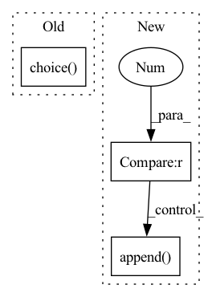

Pattern ID :15606
Before Change
ret = {}
ret["channels"] = []
for n_channel in self.n_channels:
ret["channels"].append(random.choice( n_channel) )
return ret
def largest(self):After Change
ret = {}
ret["channels"] = []
for n_channel in self.n_channels:
if weighted_sample > 1.0001 :
now = (len(n_channel) - 1) / (weighted_sample - 1)
weights = []
while len(weights) < len(n_channel):
weights.append( now)
now += 1
else:
weights = None
ret["channels"].append(random.choices(n_channel, weights=weights)[0])In pattern: SUPERPATTERN
Frequency: 3
Non-data size: 3
Instances Fragment ID: 52825518
Project Name: mit-han-lab/gan-compression
Commit Name: a5b326292511441dafaebc670ae416a8880cf5f2
Time: 2020-10-03
Author: lmxyy1999@foxmail.com
File Name: configs/spade_configs.py
M Class Name: SPADEConfigs
N Class Name: SPADEConfigs
M Method Name: sample(2)
N Method Name: sample(1)
M Parent Class:
N Parent Class:
M File Name: configs/spade_configs.py
N File Name: configs/spade_configs.py
M Start Line: 9
M End Line: 13
N Start Line: 9
N End Line: 21
Before Change
weights = torch.sigmoid(-q_std * weight_temp) + 0.5
elif weight_type == "softmax":
s1_rep = target_agent.encoder(o1)
a1 = random.choice( agent.actors) (s1_rep).sample()
if discrete:
q_std = torch.stack(
[After Change
batch_size,
discrete=False,
):
if weight_type is None or weight_temp is None or agent.ensemble_size == 1 :
return 1.0
o, a, _, o1, _ = replay_dict["primary_batch"]
with torch.no_grad():
if weight_type == "sunrise":
s_rep = target_agent.encoder(o)
if discrete:
q_std = torch.stack(
[q(s_rep).gather(1, a.long()) for q in target_agent.critics], dim=0
).std(0)
else:
q_std = torch.stack(
[q(s_rep, a) for q in target_agent.critics], dim=0
).std(0)
weights = torch.sigmoid(-q_std * weight_temp) + 0.5
elif weight_type == "softmax":
s1_rep = target_agent.encoder(o1)
q1s = []
for actor, critic in agent.ensemble:
a1 = actor(s1_rep).sample()
if discrete:
breakpoint()
q1s.append(critic(s1_rep).gather(1, a1.unsqueeze(1).long()))
else:
q1s.append( critic(s1_rep, a1))
q_std = torch.stack(q1s, dim=0).std(0)
weights = batch_size * F.softmax(-q_std * weight_temp, dim=0)
logs["bellman_weights/mean"] = weights.mean().item()
logs["bellman_weights/max"] = weights.max().item() Fragment ID: 52825519
Project Name: jakegrigsby/super_sac
Commit Name: 819313070dbb7c72886cafb948c401c78eb03861
Time: 2021-10-12
Author: jcg6dn@virginia.edu
File Name: uafbc/learning_utils.py
M Class Name: AnonimousClass
N Class Name: AnonimousClass
M Method Name: compute_backup_weights(8)
N Method Name: compute_backup_weights(8)
M Parent Class:
N Parent Class:
M File Name: uafbc/learning_utils.py
N File Name: uafbc/learning_utils.py
M Start Line: 292
M End Line: 306
N Start Line: 278
N End Line: 304
Before Change
ret["channels"] = []
if self.weights is None:
for n_channel in self.n_channels:
ret["channels"].append(random.choice( n_channel) )
else:
assert len(self.n_channels) == len(self.weights)
for n_channel, weight in zip(self.n_channels, self.weights):After Change
ret = {}
ret["channels"] = []
for n_channel in self.n_channels:
if weighted_sample > 1.0001 :
now = (len(n_channel) - 1) / (weighted_sample - 1)
weights = []
while len(weights) < len(n_channel):
weights.append( now)
now += 1
else:
weights = None
ret["channels"].append(random.choices(n_channel, weights=weights)[0]) Fragment ID: 52825517
Project Name: mit-han-lab/gan-compression
Commit Name: a5b326292511441dafaebc670ae416a8880cf5f2
Time: 2020-10-03
Author: lmxyy1999@foxmail.com
File Name: configs/resnet_configs.py
M Class Name: ResnetConfigs
N Class Name: ResnetConfigs
M Method Name: sample(2)
N Method Name: sample(1)
M Parent Class:
N Parent Class:
M File Name: configs/resnet_configs.py
N File Name: configs/resnet_configs.py
M Start Line: 10
M End Line: 21
N Start Line: 10
N End Line: 23